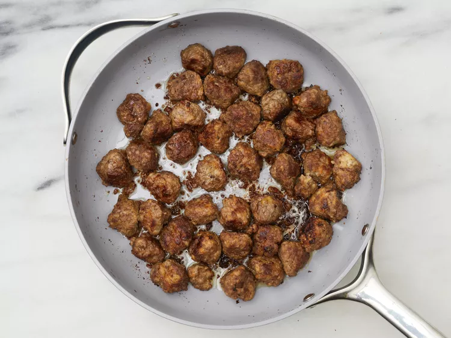
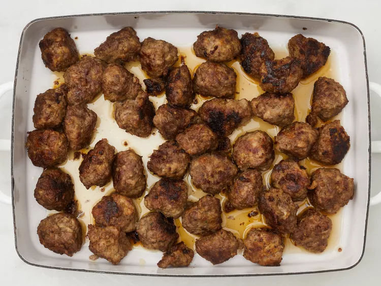
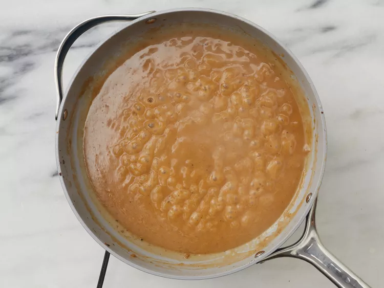

Swedish Meatballs (Svenska Kottbullar)
.webp)
Description
This Swedish meatball recipe is our family's Christmas tradition. We frequently double the recipe and keep it warm in a slow cooker. Worth the effort, and the meatballs are even better the next day! Reserve brown gravy and add sour cream to it the day you serve the leftovers.
Ingredients
-
2 slices day-old white bread, crumbled
-
½ cup heavy cream
-
1 teaspoon butter
-
1 small onion, minced
-
⅔ pound ground beef
-
⅓ pound finely ground pork
-
1 egg
-
1 tablespoon brown sugar (Optional)
-
1 teaspoon salt
-
¼ teaspoon ground black pepper
-
¼ teaspoon ground nutmeg
-
¼ teaspoon ground allspice
-
⅛ teaspoon ground ginger (Optional)
-
1 tablespoon butter
-
¼ cup chicken broth
-
3 tablespoons all-purpose flour, or as needed
-
2 cups beef broth, or as needed
-
½ (8 ounce) container sour cream
-
Preheat the oven to 350 degrees F (175 degrees C).
-
Place bread crumbs into a small bowl; mix in cream. Allow to stand until crumbs absorb cream, about 10 minutes.

-
Meanwhile, melt 1 teaspoon butter in a skillet over medium heat; cook and stir onion until light brown, about 10 minutes. Transfer onion to a mixing bowl.
-
Mix ground beef, ground pork, egg, brown sugar, salt, black pepper, nutmeg, allspice, and ginger with onion in the mixing bowl. Lightly mix in bread crumbs and cream.

-
Melt 1 tablespoon butter in a large skillet over medium heat. Pinch off about 1 1/2 tablespoon meat mixture per meatball; form into balls. Place meatballs into the skillet and cook, turning often, until browned, about 5 minutes. Insides of meatballs will still be pink.

-
Place browned meatballs into a baking dish, pour in chicken broth, and cover with foil.
-
Bake in the preheated oven until meatballs are tender, about 40 minutes. Remove meatballs to a serving dish.

-
Pour pan drippings into a saucepan over medium heat. Whisk flour into drippings until smooth.

-
Gradually whisk in enough beef broth to total about 2 1/2 cups liquid.

-
Bring gravy to a simmer, whisking constantly, until thickened, about 5 minutes.

-
Just before serving, whisk in sour cream. Season with salt and black pepper. Serve gravy with meatballs.